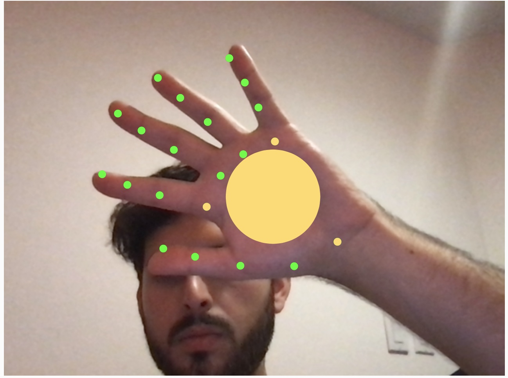
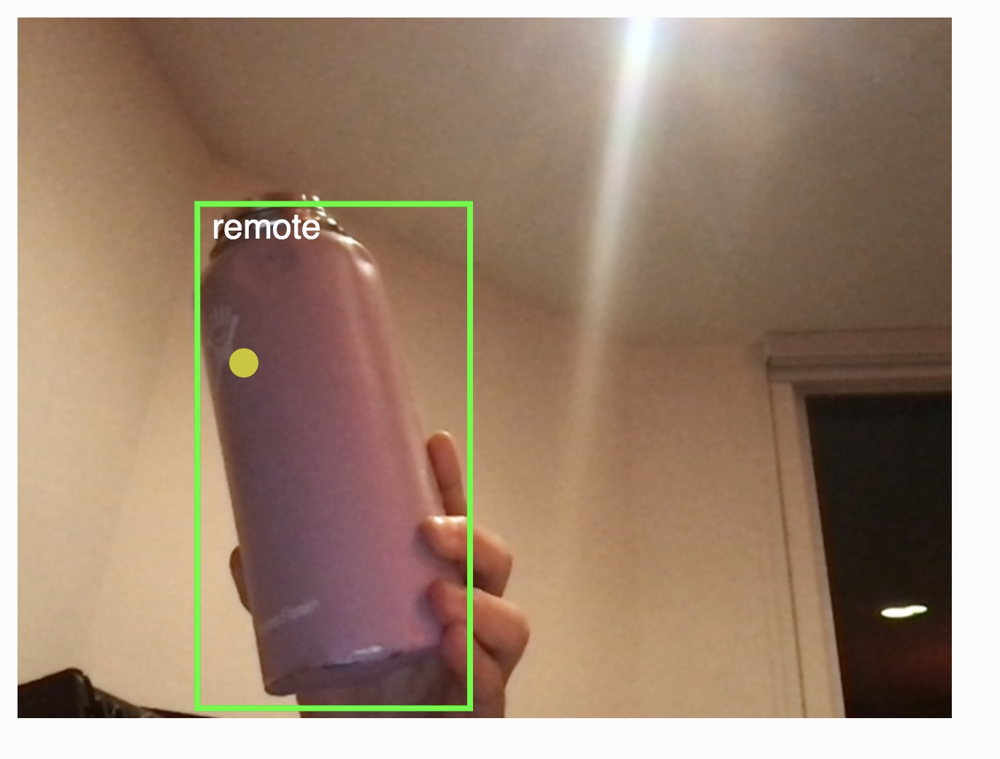

Project 1!

experiments in red
I started out this project with handpose recognition –
getting ml5 working with a basic hand recognition example.
This involved finding key points, triangulating, and figuring
out how to pin point the palm. My process dots are shown in yellow:

I then looked at recognizing other objects. I played around with
Teachable Machine, which would only classify whole images without
image segmentation, so that wasn't going to work. I tested out the
COCOSSD object detector, which had incredibly unreliable results –
inconsistency of detection and classification, as well as wonky
coordinates that sometimes showed up outside of the object itself:

I finally decided to stick with the hands, using perlin noise for
a tomato squish that oozes down the screen. Please play around with
it below: